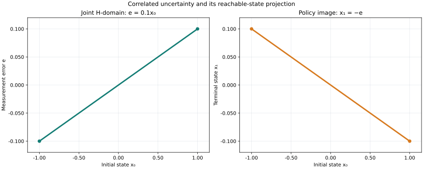

Verdict: descriptive result; performance comparison is inconclusive. One pinned LP adapter and one fixture were measured. No comparator or source-mapped limiter profile was collected.
This one-step scalar example preserves a correlation between the initial state and measurement error: e=0.1x₀. The controller uses the pre-decision observation y=x₀+e and applies u=−y, producing x₁=−e. A numerical feasible domain witness, six dual support bounds, and a separate primal counterexample smoke case were checked.

Figure policy: Matplotlib 3.11.2 and csl-report-quantitative-v1. Plot rendering is excluded from solver timing. PNG view · tick/grid policy source.
| Constraint | Maximum activity | Safety bound |
|---|---|---|
| state stage 0 row 0 | 1 | 1.2 |
| state stage 0 row 1 | 1 | 1.2 |
| state stage 1 row 0 | 0.1 | 0.2 |
| state stage 1 row 1 | 0.1 | 0.2 |
| action stage 0 row 0 | 1.1 | 1.2 |
| action stage 0 row 1 | 1.1 | 1.2 |
One excluded 100-call warmup followed by seven measured batches of 100 calls. Median 76.115 ms per batch (761149.2 ns/call); range 75.912–76.776 ms. Each call performed seven LP solves and literal correlation, residual, support-bound, replay-status checks. Fixture creation and JSON serialization were excluded.
| Round | Batch ms | ns/call | Outcome |
|---|---|---|---|
| 1 | 76.776 | 767761.8 | passed |
| 2 | 76.280 | 762797.5 | passed |
| 3 | 76.093 | 760927.1 | passed |
| 4 | 76.115 | 761149.2 | passed |
| 5 | 75.912 | 759115.4 | passed |
| 6 | 76.258 | 762582.4 | passed |
| 7 | 76.090 | 760899.2 | passed |
{"cmake": "3.31.6", "compiler": "GCC 16.2.1 (20260810)", "configuration": "Release, -O3, C++20; warnings enabled and treated as errors for the report driver", "cpu": "AMD Ryzen 5 3550H with Radeon Vega Mobile Gfx", "host_load_at_measurement_start": "load average 3.89, 2.91, 4.01; the clean Release build had just completed", "limiter_profile": "perf is not installed; no source-mapped limiter profile is available", "logical_processors": 8, "lp_backend": "HiGHS 1.11.0, native multithreading disabled", "matplotlib": "3.11.2 (figure rendering only; excluded from solver timing)", "ninja": "1.12.1", "os": "Linux x86_64, kernel 7.2.8-9-omarchy", "outer_workers": 1, "report_figure_style": "csl-report-quantitative-v1"}
These are single-adapter numerical observations on one analytic fixture. The caller-authored H-set is assumed to describe the relevant uncertainty. No validated-arithmetic, policy-synthesis, universal-disturbance, speedup, scalability, or application-load claim is made. The source-mapped performance limiter is unavailable, so performance interpretation is inconclusive.
Source commit 0c0a95116ce4642bd560d8f285b244e104aaa266; report ID ext04-h-policy-0c0a95116ce4642b. Bundle: driver, renderer, plot adapter, SVG validator source, records, raw trials, CSV, environment, Release build log, offline ZIP.